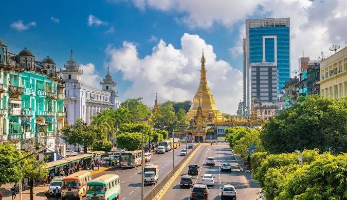
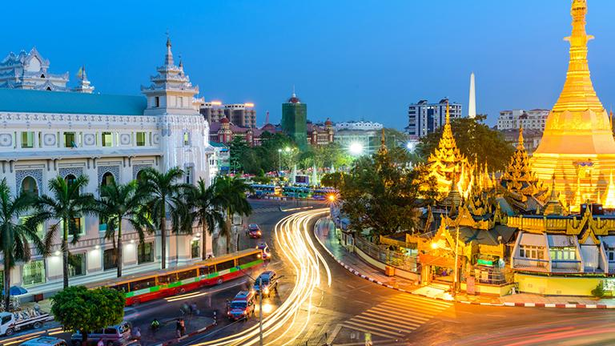

A trace of past time through remaining buildings
Amy
Whenever you hear the name of Myanmar, Yangon is one of the most attached and familiar name if you have been to Myanmar. Yangon is the most bustling and urbanized moreover you cannot enter through the country without passing it as it is the international gateway.
It was formerly known as Rangoon and is a place of variety of attractions of parks, lakes, pagodas and especially enchanting colonial and heritage buildings. It is more crowded and populated than any other cities across the country however it still exists a home for more than a hundred of impressed architectural buildings having interesting backgrounds.
The modern history of Yangon can be traced through its colonial-era buildings and the imprint of the past is indelibly marked on the life cycle of each remaining structure, The stories of these buildings are intimately entwined with the people who built them, the memories of those who lived and worked within them, and the reality of those who live and work there still.
A place symbolizing of mixture of traditional and western styles, City Hall
Around Sule Pagoda, there is a stunning creamy color combined with light purple building reminding the place built in 1926 which had held many political assemblies during colonial era. City Hall is an enormous

four-storey building located in the very center of downtown Yangon and its unique structure was the first large-scale masonry building to combine European design and engineering technology with traditional Myanmar flourishes.
The design flourishes on City Hall were created by Burmese architect Situ U Tin and had a great inspiration of ancient capital, Bagan as it was featured traditional tired roofs called pyatthat. It was praised as a building worthy of the metropolis and inaugurates a new era in secular Burmese Architecture. Nowadays, this building is occupied by the city’s current municipal authorities, the Yangon City Development Committee.
A stimulus strengthens patriotic spirit, Minister’s Office
One of the most iconic colonial buildings, aging 120 years old built under the British ruling time, Minister’s Office is exemplified as Victorian Colonial Architecture by designing as the administrative seat of the colonial government is located on Thein Phyu Road .This sprawling Victorian structure was referred to British residents as “bureaucratic Byzantines” in style. Designs of this secretariat office were drawn by Henry Hoyne–Fox who was the creator of many government buildings in the city. This office was built in 1896 made of red and yellow brick in U Shape. Its architecture as well as the historic event took place in that building makes it unique.
An unforgettable event in Burmese Independence History, the assassination of Nation’s leaders, General Aung San and his accompanies by the disgusted betrayals during a meeting of the Executive Council on 19th July, 1947 happened in that building . Today, the room in which they were assassinated is maintained as a shrine, those who died there became known as martyrs.

The former President of the United States, Barack Obama visited to there to commemorate and honor the endured and concreted efforts of the fallen. This building will take the visitors to past time while the leaders were striving for the independence regardless of domestic or foreign and will be surely give a message to take away to your home.
An atmosphere surrounded by a sense of justice, High Court
The dusky rose colored High Court is another outstanding example of a grand old building of Empire. It was designed by James Ransome, a consulting
architect to the Government of India in 1914 with the name of Parliament of Justice. The towers and loggia windows feature elaborate brick patterns. The cream-painted arches, rows of balconies and stuccowork echo Renaissance architecture. But this building is distinctive in its use of pale burgundy bricks, manufactured locally by the construction company Bagchi & Co.
It was resembled in the style of Queen Anne Style having the features of lion statues and a bell clock tower striking once an hour passed which are standing as the guardians watching you and deterring from breaking justice. It is located on Pansodan Street and now serves as the high court head office of the Yangon Region.
A storing spot of nostalgia moments, Central Post Office
Painted maroon with cream stuccowork and rows of Loncet-arched windows, this building still retains some fine original fittings such as the beaux-arts portico and double-winged stairways in the foyer. This building was constructed in 1854 as the headquarters of one of colonial Burma’s major rice traders, Bulloch Brothers & Co., a Scottish firm headquartered in Glasgow.
This building on Bo Aung Kyaw Road still functions as post office where tourists are allowed to enter without prior permission to observe the interior of a colonial era structure. Collections of variety of stamps of different periods and its British architectural designs can be learned and photographing with the displayed old jeeps should not be missed out.
A paradise for shoppers and foodies , Bogyoke Market (Scott Market)
If you want to get the experience of shopping in a colonial atmosphere with a sprawling crowds of stalls selling variety of products including traditional handicrafts, antiques jades, jewelries , art galleries, clothing and others amounting of 2000 shops along the cobblestone streets, it is a must visit. Bogyoke Market was built in 1926 and its former name, Scott Market was inspired the name of the British civil servant who introduced playing soccer or football to Myanmar.